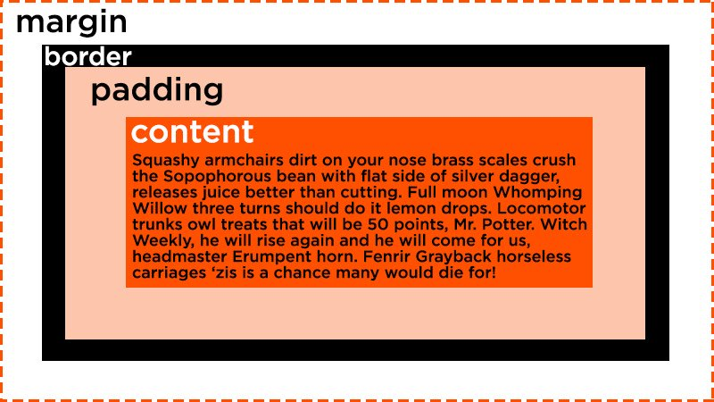
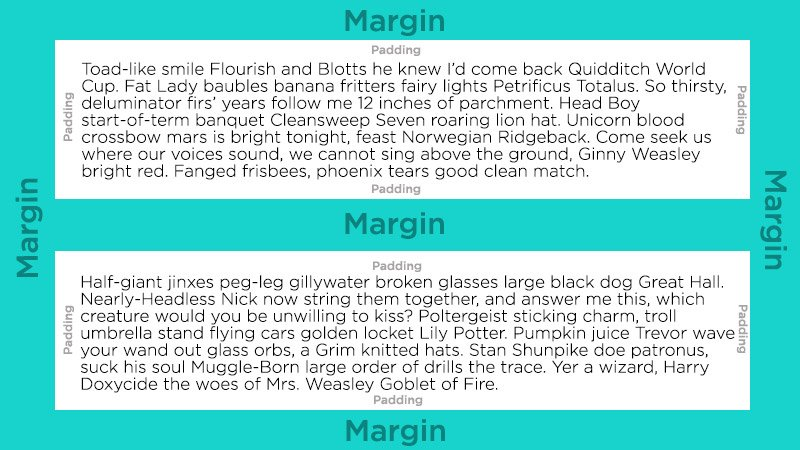

The Box Model is a fundamental concept in CSS that describes the layout and structure of HTML elements. It defines how each HTML element is represented as a rectangular box, and this box is composed of four main components: content, padding, border, and margin.
If you think about a typical website, then you have got different components that are on the screen, different HTML elements. Even though we can't really see it, effectively each element is a box in itself, and we can change the dimensions of those boxes by changing things such as width and height.
Padding: Internal Comfort
Padding is the space between the content and the border. It provides internal spacing, helping to separate the content from the border.
Border: The Protective Shield
The border is the line that surrounds the padding. It can have various styles (solid, dashed, dotted, etc.) and colors, defining the visual boundary of the element.
Margin: Outermost Spacing
The margin is the outermost layer and represents the space between the border of the element and its surrounding elements. It creates external spacing, determining how much space should be outside the border.
Applying the Box Model
When applying styles to an HTML element, you often set properties for each of these components (content, padding, border, and margin) to control the size, appearance, and spacing of the element on the webpage. Understanding the box model is crucial for creating well-structured and visually pleasing layouts in web development.
To truly grasp the concept of padding, margin, and border, it's always best to visualize it. Seeing a picture makes much more sense and helps you apply these concepts more effectively in your web design journey.
 